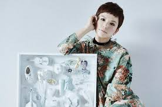

2007年にシングル『ハロー・ハロー』でデビュー。
2008年には1stアルバム『Superfly』をリリースし、オリコンアルバムランキング1位を記録。
以降、2ndアルバム『Box Emotions』(2009年)、3rdアルバム『Mind Travel』(2011年)、4thアルバム『Force』(2012年)、さらにシングルと洋楽カバー集の企画アルバム『Wildflower & Cover Songs：Complete Best ‘TRACK3’』(2010年)、初のベストアルバム『Superfly BEST』（2013年）でオリコンアルバムランキング1位を獲得。
デビュー当初からライブパフォーマンスへの評価も高く、2009年にはニューヨーク郊外で行われたウッドストック40周年ライブに日本人として唯一出演し、ジャニス・ジョップリンがかつて在籍したBig Brother ＆ The Holding Companyと共演。同年12月には日本武道館公演、2010年にはFUJI ROCK FESTIVALでメインのGREEN STAGEに出演。2011年には初のアリーナツアー、2012年には全国35公演のホールツアーと2013年3月～4月には全国9公演に及ぶデビュー5周年記念のアリーナツアーを開催し成功を収めた。
2015年5月、約3年ぶりとなるオリジナル5thアルバム『WHITE』をリリースし、同年7月から過去最大規模となる33都市39公演のホールツアーを開催。2016年1月からは同じく過去最大規模となる7都市全11公演のアリーナツアー『Superfly Arena Tour 2016 “Into The Circle！”』を開催し、約10万人を動員。
デビュー10周年を迎えた2017年4月4日、ファン投票によるベストアルバム『Superfly 10th Anniversary Greatest Hits “LOVE, PEACE & FIRE”』をリリース。オリコン1位を獲得。11月15日には東京オペラシティ コンサートホール・タケミツ メモリアルにて「Superfly 10th Anniversary Premium LIVE “Bloom”」を開催。12月31日、2015年以来2年ぶり2度目となる「NHK紅白歌合戦」出場を果たした。
J-POPシーンに独自のバンドサウンドで挑戦し続けるSuperfly。志帆の圧倒的なボーカル、ライブパフォーマンス、そしてオリジナリティ溢れる音楽性が大きな注目を集めているアーティストである。
1984.2.25生まれ。